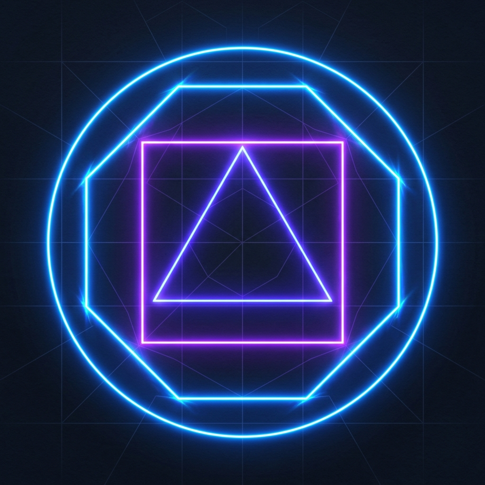
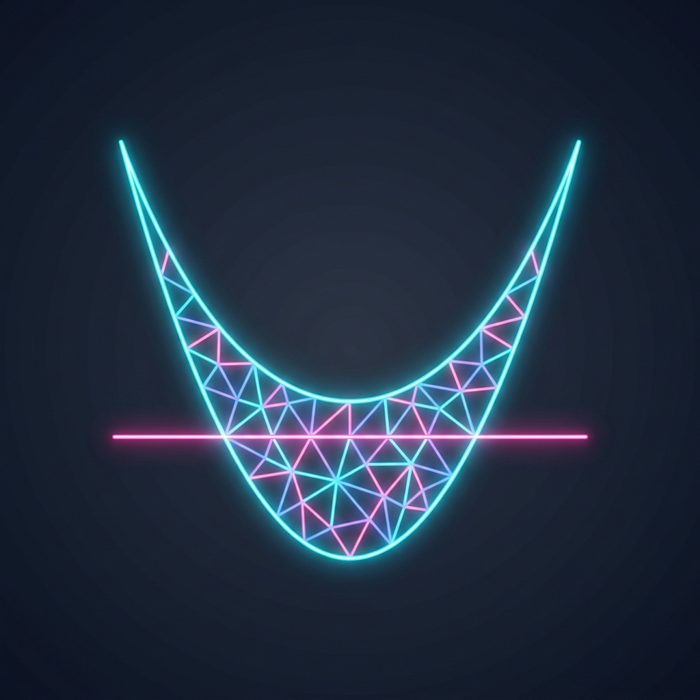

Aproximando curvas y áreas a través de figuras poligonales infinitas.
Comprender la aproximación al área de curvas mediante polígonos regulares, sentando las bases intuitivas del cálculo integral clásico a través del pensamiento de Arquímedes.
Enunciado Teórico: "Si de cualquier magnitud se resta una parte que no sea menor que su mitad, y si del resto se resta otra vez una parte que no sea menor que su mitad, y si se continúa este proceso de sustracción de forma indefinida, quedará finalmente una magnitud que será menor que cualquier magnitud dada."
Descripción: Desarrollado inicialmente por Eudoxo y llevado a la maestría por Arquímedes, este método precursor del cálculo consiste en aproximar el área de una figura curva inscribiendo y circunscribiendo polígonos en ella. Al aumentar infinitamente el número de lados de estos polígonos, su área "agota" (exhausción) el espacio vacío restante hasta igualar exactamente el área de la curva perfecta que los contiene.


Experimenta el método de exhausción. Desliza la barra para aumentar el número de lados del polígono inscrito y observa cómo se aproxima al círculo perfecto.